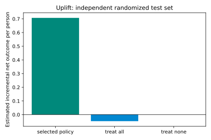

Uplift modeling in Python: the Hillstrom email experiment¶
Decide whether to send a campaign email to everyone, a subset, or nobody. Compare incremental visits on a randomized holdout.
1. Get the data and define the evaluation¶
The Hillstrom email experiment randomly assigned 64,000 customers to a men's email, women's email or no email. This example compares women's email versus no email, using a website visit within two weeks as the outcome. It excludes the men's arm and uses only pre-treatment features. A visit is not a purchase or profit.
dataset_path("hillstrom_email") downloads the CSV from the publisher's MineThatData page on first use and caches it under ~/.cache/mltreelib/datasets/ (or MLTREELIB_DATA_DIR). The publisher's HTTPS endpoint fails certificate validation, so the file is fetched over plain HTTP and checked against SHA-256 0e5893329d8b93cefecc571777672028290ab69865718020c78c7284f291aece.
Next: fit a causal tree on the randomized training rows from step 1, and use the validation rows to choose the email threshold while the test outcomes stay sealed.
2. Fit a causal tree and choose an email policy¶
Use treatment as part of the target. The columns below describe customers before the campaign. Use validation to choose a threshold. Keep the randomized test outcomes sealed until after the policy is fixed.
flowchart TD
subgraph HonestSplit["Honest Causal Partitioning (Athey & Imbens 2016)"]
direction TB
Sample["Randomized Trial Data (Y, W, X)"] --> Partition{"Random Subsample Split"}
Partition -->|"Structure Sample S_tr"| TreeStructure["Tree Split Optimization\nmax Delta tau(s)"]
Partition -->|"Estimation Sample S_est"| LeafEstimator["Leaf CATE Estimation\ntau_hat = E[Y | W=1] - E[Y | W=0]"]
TreeStructure --> FixedNodes["Fixed Partition Topology"]
FixedNodes & LeafEstimator --> UnbiasedModel["Unbiased Honest Causal Tree"]
end
classDef dataBox fill:#1e293b,stroke:#475569,stroke-width:2px,color:#ffffff;
classDef gateBox fill:#b45309,stroke:#d97706,stroke-width:2px,color:#ffffff;
classDef treeBox fill:#4338ca,stroke:#6366f1,stroke-width:2px,color:#ffffff;
classDef leafBox fill:#065f46,stroke:#059669,stroke-width:2px,color:#ffffff;
classDef causalBox fill:#0f766e,stroke:#14b8a6,stroke-width:2px,color:#ffffff;
class Sample dataBox;
class Partition gateBox;
class TreeStructure,FixedNodes treeBox;
class LeafEstimator leafBox;
class UnbiasedModel causalBox;This snippet loads the Hillstrom CSV, wraps it in a Dataset with outcome="visit" and treatment="treat", and makes a stratified 60% / 20% / 20% split (train, val, test). It fits an honest causal tree at max_depth=4 (min_rows=250, prune="none", honesty=True, seed=42). Note that the causal leaf is always a difference of means (\(\bar{Y}_1 - \bar{Y}_0\)) whatever the leaf setting (leaf="linear" produces the same leaf estimates under gain="causal"). It then calls uplift_threshold on val to pick the score cutoff and prints MetricsReport("uplift", ...) on test.
import pandas as pd
from mltreelib import MetricsReport, ModelTree, dataset_path, uplift_threshold
from mltreelib.data import Dataset
df = pd.read_csv(dataset_path("hillstrom_email"))
df = df[df["segment"].isin(["Womens E-Mail", "No E-Mail"])].copy()
df["treat"] = (df["segment"] == "Womens E-Mail").astype(int)
features = ["recency", "history", "mens", "womens", "newbie", "zip_code", "channel"]
ds = Dataset(
{k: df[k].tolist() for k in [*features, "treat", "visit"]},
outcome="visit",
treatment="treat",
features=features,
name="hillstrom_women",
)
train, val, test = ds.split(val_size=0.2, test_size=0.2, stratify=True, seed=2026)
print(f"Rows: train {train.n_rows}, validation {val.n_rows}, test {test.n_rows}")
tree = ModelTree(
gain="causal", leaf="mean", max_depth=4, min_rows=250,
prune="none", honesty=True, seed=42,
)
tree.fit(train)
val_scores = tree.predict(val, kind="uplift")
threshold = uplift_threshold(val.y, val.treatment, val_scores)
test_scores = tree.predict(test, kind="uplift")
rep = MetricsReport(
"uplift",
y_true=test.y,
treatment=test.treatment,
tau_pred=test_scores,
threshold=threshold,
)
print(rep)
Rows: train 25615, validation 8539, test 8539
Metrics report: uplift
======================
Inputs
------
threshold -0.01564
Rows per argument (n_missing = None/NaN):
argument n n_missing
y_true 8539 0
treatment 8539 0
tau_pred 8539 0
Overview
--------
n_total 8539
n_treated 4278
n_control 4261
ate 0.05314
qini_coef 37.54
qini_norm 0.07497
auuc 299.9
top_decile_uplift 0.06752
top_quintile_uplift 0.07457
Qini curve points:
population_fraction qini
0 0
0.0001171 0
0.0002342 0
0.0003513 0
0.0004684 0
0.0005855 0
0.0007027 -0.2
0.0008198 -0.4
0.0009369 -0.3333
0.001054 -0.5
0.001171 -0.4286
0.001288 -0.375
0.001405 -0.3333
0.001522 -0.3
0.00164 -0.2727
0.001757 -0.3636
0.001874 -0.4545
0.001991 -0.4167
0.002108 0.5
0.002225 0.5385
... 8515 rows omitted; full table in .tables['qini_curve']
0.9995 226.3
0.9996 226.4
0.9998 226.3
0.9999 227.2
1 227.3
Cumulative gain points:
population_fraction gain
0 0
0.0001171 0
0.0002342 0
0.0003513 0
0.0004684 -1
0.0005855 -1
0.0007027 -1.2
0.0008198 -1.4
0.0009369 -1.333
0.001054 -1.5
0.001171 -1.429
0.001288 -1.375
0.001405 -1.333
0.001522 -1.3
0.00164 -1.273
0.001757 -1.364
0.001874 -1.455
0.001991 -1.417
0.002108 1.5
0.002225 1.705
... 8515 rows omitted; full table in .tables['cumulative_gain']
0.9995 451.7
0.9996 452
0.9998 451.7
0.9999 453.5
1 453.7
Policy
------
threshold -0.01564
Policy comparison (selected: tau_pred > threshold; 95% normal CI):
policy n_selected n_treated n_control value ci_low ci_high
selected 8296 4158 4138 0.05281 0.03901 0.06662
treat_all 8539 4278 4261 0.05314 0.03914 0.06714
treat_none 0 0 0 0 n/a n/a
Uplift by decile
----------------
Uplift by predicted-effect decile (decile 1 = highest):
decile n n_treated n_control mean_tau_pred mean_treated mean_control uplift
1 853 431 422 0.1124 0.1508 0.08294 0.06787
2 854 445 409 0.08946 0.1551 0.07335 0.08171
3 854 412 442 0.08023 0.1772 0.09502 0.08216
4 854 441 413 0.06509 0.2177 0.1114 0.1063
5 854 426 428 0.06228 0.2136 0.1121 0.1015
6 854 424 430 0.03101 0.1061 0.08837 0.01776
7 854 439 415 0.02068 0.1162 0.08193 0.03425
8 854 417 437 0.01189 0.1007 0.08924 0.01147
9 854 424 430 0.007747 0.1651 0.1256 0.03951
10 854 419 435 -0.003709 0.1146 0.1264 -0.01188
What to read in the output: MetricsReport("uplift", ...) reports four sections. Overview gives the overall ATE, Qini coefficient, normalized Qini, AUUC, top-decile uplift, and top-quintile uplift. Policy compares the validation-selected cutoff (tau_pred > threshold) against treat_all and treat_none by multiplying the treated-minus-control difference in the selected group by the selected population fraction, with approximate 95% normal confidence intervals. Uplift by decile ranks customers from highest predicted effect (decile 1) to lowest (decile 10) and shows the observed treated and control visit rates in each decile. If treatment has a cost, pass cost=... to both uplift_threshold and MetricsReport.
Next: report the held-out policy values for the threshold chosen in step 2, next to treat-all and treat-none.
3. Interpret the held-out results¶
The stratified seeded split contains 25,615 training, 8,539 validation and 8,539 test rows. An honest causal tree at depth 4 ranks customers. uplift_threshold selects the policy threshold (-0.01564) on validation data, and MetricsReport estimates incremental visits on the randomized test set. This example assumes zero treatment cost because campaign costs are not in the data.
| Test policy | Selected | Treated / control | Incremental visits per eligible customer | Approximate 95% interval |
|---|---|---|---|---|
| Validation-selected policy | 8,296 | 4,158 / 4,138 | 0.05281 | 0.03901 to 0.06662 |
| Treat all | 8,539 | 4,278 / 4,261 | 0.05314 | 0.03914 to 0.06714 |
| Treat none | 0 | 0 / 0 | 0 | — |

The validation-selected policy emails 8,296 of the 8,539 test customers. It yields 0.05281 incremental visits per eligible customer (95% CI 0.03901 to 0.06662), compared with 0.05314 (95% CI 0.03914 to 0.06714) for treat-all. With overlapping confidence intervals and a lower point estimate, this run supplies no evidence that targeting improves on treat-all at zero treatment cost. The interval is a normal approximation conditional on the selected population and excludes model-selection uncertainty. The data is from a historical campaign; repeat evaluation in a new experiment, include costs and use the outcome the business actually values before applying a policy.
Next: check the same kind of policy comparison on a simulated trial, because the Hillstrom data cannot show both potential outcomes for each customer.
4. Controlled check with synthetic truth¶
The survival and uplift evaluation script simulates a randomized trial. It uses 3,000 training, 1,000 validation and 2,000 independent test observations. It selects a threshold on validation data and evaluates the fixed policy on test data. The example assigns a treatment cost of 0.5 outcome units per treated person.
| Test policy | Selected | Treated / control among selected | Estimated net outcome per person |
|---|---|---|---|
| Selected policy | 967 | 471 / 496 | 0.7072 |
| Treat all | 2,000 | 972 / 1,028 | -0.0478 |
| Treat none | 0 | 0 / 0 | 0 |

Within the selected subgroup, the script compares observed treated and control outcomes. It subtracts the cost and multiplies by the selected fraction to report value per person in the whole test population. The selected policy's approximate 95% interval is [0.6438, 0.7706]. It uses a normal approximation conditional on the selected fraction; it does not include model-selection uncertainty. Randomized assignment and independent test data support this comparison. Check arm counts and use a suitable uncertainty method for the actual design.
Synthetic truth is available here: the selected policy's true net value is 0.7252 per person and PEHE is 0.2347. Real records do not reveal both potential outcomes, so individual-effect error and PEHE cannot be calculated directly from ordinary real-world outcomes. For real-world evaluation, MetricsReport("uplift", ...) and uplift_threshold(...) provide the policy table and decile breakdown directly.
Next: the worked example also uses a simulation with a known effect, to check numerical effect recovery, which real Hillstrom outcomes cannot provide.
5. Worked example: recovering a known treatment effect¶
Use simulation to check numerical effect recovery. The Hillstrom sections above show how to evaluate a real randomized policy when individual effects are unknown.
Standard machine learning models optimize predictive accuracy: \(\hat{Y} = E[Y | X]\). In decision sciences, personalized medicine, and targeted marketing, the central quantity is not outcome prediction but intervention effect: $\(\tau(x) = E[Y | X=x, W=1] - E[Y | X=x, W=0]\)$
ModelTree provides native Rust-accelerated Causal Trees that split directly on treatment effect divergence without external meta-learners or propensity weighting loops.
Script:
- benchmarks/suites/causal_benchmark.py (python3 benchmarks/suites/causal_benchmark.py)
======================================================================
1. CAUSAL TREE ON NIE & WAGER (2021) / CAUSALML SETUP B
======================================================================
Dataset Size: N_train=2000, N_test=1000, P=6 features
Causal Tree: Leaves=10, Max Depth=4
True Average Treatment Effect (ATE): 0.8177
Estimated Average Treatment Effect (ATE):0.8030
ATE Absolute Error: 0.0147
PEHE (Heterogeneity Precision): 0.5848
[Pass] Exact Leaf Arithmetic Assertion: All leaf CATEs match raw group differences within 1e-9.
======================================================================
2. STRUCTURAL CATE STEP RECOVERY & SLEEPING DOG IDENTIFICATION
======================================================================
Left regime (x0 < 0) - True tau = +10.0 | Estimated tau = +10.0095
Right regime (x0 >= 0) - True tau = -5.0 | Estimated tau = -5.1823
[Pass] Exact Leaf Arithmetic Assertion: All leaf CATEs match raw group differences within 1e-9.
[Pass] Successfully differentiated persuasive units (+10.0) from sleeping dogs (-5.0).
1. The Tuple Target Contract¶
Causal inference requires both the observed response \(Y_i\) and the binary treatment indicator \(W_i \in \{0, 1\}\). Rather than bloating the covariate space \(X\), ModelTree accepts target tuples:
from mltreelib import ModelTree
# X: predictive covariates only
# y: 2-tuple (outcomes, treatments)
y_tuple = (outcomes, treatments)
tree = ModelTree(gain="causal", max_depth=3, min_rows=20, leaf="mean")
tree.fit(X, y_tuple)
2. \(O(1)\) Causal Splitting Criterion¶
Standard regression trees minimize variance: \(\text{Gain} = \Delta \text{SSE}\). Causal trees maximize the squared difference in treatment effects between children (Athey & Imbens 2016):
where: $\(\hat{\tau}_L = \bar{Y}_{L, \text{treated}} - \bar{Y}_{L, \text{control}}, \quad \hat{\tau}_R = \bar{Y}_{R, \text{treated}} - \bar{Y}_{R, \text{control}}\)$
The split search maintains running sums of \((W_i, W_i Y_i)\) for treated and control rows separately. Evaluated in \(O(1)\) scalar updates per candidate threshold with zero vector allocations.
Admissibility Condition¶
A split is admissible only if both children satisfy: $\(N_{L, \text{treated}} \ge 1, \quad N_{L, \text{control}} \ge 1, \quad N_{R, \text{treated}} \ge 1, \quad N_{R, \text{control}} \ge 1\)$ This permits a treated-minus-control sample difference in each child. It does not establish a causal effect, and one observation per arm is not enough to support a stable decision.
A causal interpretation requires assumptions about the data and intervention. Random treatment assignment supports exchangeability. Observational data requires conditional exchangeability given pre-treatment covariates, treatment overlap, and a defensible account of confounding. Consistency and the absence of relevant interference also matter. Honesty reduces reuse of outcomes for split selection and estimation, but it does not remove confounding. See Athey and Imbens (2016).
Evaluate a targeting policy on an independent randomized holdout. Report treated and control counts by segment, uncertainty, incremental outcomes and treatment costs. Individual treatment effects and PEHE are known in the synthetic benchmark below; they are not observed for real individuals.
3. Unified Uplift Predictions¶
Predictions remain unified through predict(X, kind=...):
# Predict Individual Treatment Effect (CATE / Uplift)
cate_preds = tree.predict(X_test, kind="uplift") # or kind="cate"
# Predict baseline response
baseline_preds = tree.predict(X_test, kind="response")
4. Benchmark & Numerical Validation¶
On the standard Nie & Wager (2021) / CausalML Setup B benchmark: - Precision in Estimating Heterogeneous Effects (PEHE): $\(\text{PEHE} = \sqrt{\frac{1}{N}\sum_{i=1}^N (\hat{\tau}_i - \tau_i)^2} = 0.5848\)$ - ATE Estimation Error: \(|0.8177 - 0.8030| = 0.0147\). - Exact Leaf Verification: For every terminal leaf, the predicted CATE matches the raw sample difference \(\bar{Y}_{1} - \bar{Y}_{0}\) to machine precision (\(< 10^{-9}\)).
5. Causal Survival Trees (Research Track)¶
[!WARNING] Research Work Under Consideration Causal Survival Trees with Honest Sample Splitting are experimental research. Use at your own risk.
In survival settings with right censoring \((T_i, E_i)\) and binary intervention \(W_i \in \{0, 1\}\), the target is the Conditional Average Treatment Effect on Restricted Mean Survival Time (RMST): $\(\tau_{\text{RMST}}(x) = \mathbb{E}[\text{RMST}(1) - \text{RMST}(0) \mid X=x]\)$
Honest Sample Splitting¶
Following Wager & Athey (2018) and Cui et al. (2023), ModelTree(honesty=True, honesty_fraction=0.5) partitions data into:
- Structure Set \(S^{\text{tr}}\): Used exclusively to place partition boundaries (e.g. maximizing \(\Delta \text{RMST}\) or pseudo-value variance reduction).
- Estimation Set \(S^{\text{est}}\): Independent holdout used to fit leaf survival curves and estimate CATE.
This honest decoupling removes optimistic selection bias in survival trees:
from mltreelib import ModelTree
# Honest Causal Survival Tree
tree = ModelTree(
max_depth=3,
min_rows=15,
gain="pseudo_value", # or "rmst"
honesty=True,
honesty_fraction=0.5,
seed=42,
)
tree.fit(X, (durations, events))
Executable research script:
- examples/guides/survival_causal_survival_honest.py
6. Customer IDs, Group Columns, and Leaf Membership¶
Pass id_col or group_col to fit (or set group= on Dataset for grouped splits) so identifiers are excluded from splitting (train_ids=False, train_groups=False by default). After fitting, tree.leaf_samples(x, id_col=...) maps each terminal leaf back to the customer IDs assigned to it.
from mltreelib import ModelTree
rows = [
["c1", 25.0, 1.0], ["c2", 30.0, 0.0], ["c3", 45.0, 1.0], ["c4", 50.0, 0.0],
["c5", 22.0, 1.0], ["c6", 28.0, 0.0], ["c7", 48.0, 1.0], ["c8", 55.0, 0.0],
]
y = [12.0, 10.0, 20.0, 11.0, 11.5, 9.5, 21.0, 10.5]
arm = [1.0, 0.0, 1.0, 0.0, 1.0, 0.0, 1.0, 0.0]
tree = ModelTree(gain="causal", max_depth=2, min_rows=3)
tree.fit(rows, (y, arm), id_col="customer_id", col_names=["customer_id", "age", "active"])
print("Split columns:", [s["col"] for s in tree.splits()])
print("Leaf samples:", tree.leaf_samples(rows, id_col="customer_id", col_names=["customer_id", "age", "active"]))